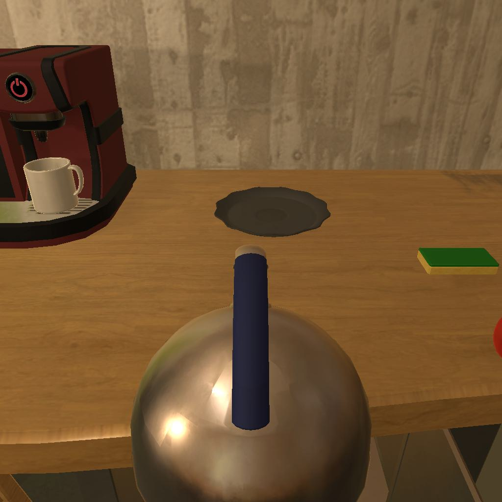

---------------------------------------------------------task: 26---------------------------------------------------------
--------------------------------------------------------------------------------------------------------------------------------------------------------------------
--------------------------------------------------------------------------------------------------------------------------------------------------------------------
Step:--------------------------------------------------------------------------19-------------------------------------------------------------------------------
----------------------------------------
VLM Prompt:
Image1:
Image2:
**Instruction**
1. Analyze the provided images to identify all visible household objects and compare the difference between images (e.h. whether the object is opened or not and taken on hand or not), focusing on those relevant to the task description "find two kettle and put them in cabinet."
2. Use the analysis of images and the task hint "The agent must find an object of the desired type, pick it up, find the correct location to place it, put it down there, then look for another object of the desired type, pick it up, return to previous location, and put it down there with the other object." to answer the question: what is the most reasonable action in the choices for the task description "find two kettle and put them in cabinet"?
3. Decide and write the answer using the template: The answer is: (i): , where i is the real number. If there is no desired object in images, search every place based on **Initial Observation** to find the object. And if no one is exactly correct, choose a similar answer.
**Initial Observation**
You are in the middle of a room. Looking quickly around you, you can see countertop (1), coffeemachine (1), cabinet (1-4), drawer (1-8), sink (1), sinkbasin (1), garbagecan (1), fridge (1), microwave (1), dresser (1), sidetable (1)
**Answer Choices**
(1): go to countertop 1
(2): go to coffeemachine 1
(3): go to drawer 1
(4): go to sink 1
(5): go to sinkbasin 1
(6): go to cabinet 3
(7): go to garbagecan 1
(8): go to cabinet 4
(9): go to drawer 2
(10): go to fridge 1
(11): go to microwave 1
(12): go to dresser 1
(13): go to sidetable 1
(14): go to drawer 3
(15): go to drawer 4
(16): go to drawer 5
(17): go to drawer 6
(18): go to drawer 7
(19): go to drawer 8
(20): open cabinet 1
(21): close cabinet 1
(22): put kettle 1 in/on cabinet 1
(23): examine kettle 1
(24): examine cabinet 1
**Answer**
Let's think step by step by following the instructions.
----------------------------------------
----------------------------------------
Original Response:
First, we analyze the provided images to identify all visible household objects. In both images, we see a kettle with a blue handle on a countertop. No other kettles are visible in the images provided.
Based on the task description "find two kettle and put them in cabinet," we need to find another kettle after identifying the one visible in the images. Since there is no second kettle visible in the images, we need to search other locations based on the initial observation.
The most reasonable action from the provided choices would be to first secure the visible kettle and then look for the second one. The visible kettle is already on the countertop, so we do not need to go there. The task hint guides us to pick up the object and find the correct location to place it, which would be a cabinet.
Therefore, the most reasonable action would be to open a cabinet to place the kettle inside. Since the images do not show which cabinet is the correct one to use, we would need to open one to check. From the answer choices, the action to open cabinet 1 (20) seems like the logical next step.
The answer is: (20): open cabinet 1.
----------------------------------------
----------------------------------------
>>> Refine Original VLM Response and Get Pure Action: open cabinet 1
----------------------------------------
-----------------------------------------------------------------
Running time: 9.81769347190857 seconds
Total Money: 13.79739
-----------------------------------------------------------------
-----------------------------------------------------------------
Text Observation:Nothing happens.
-----------------------------------------------------------------
UNSUCCEED